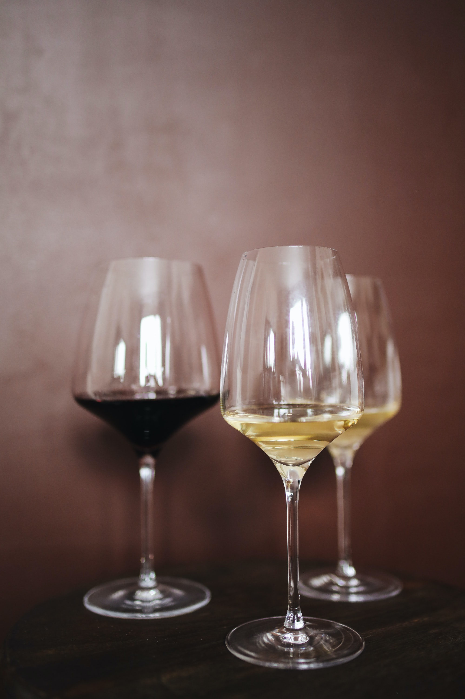
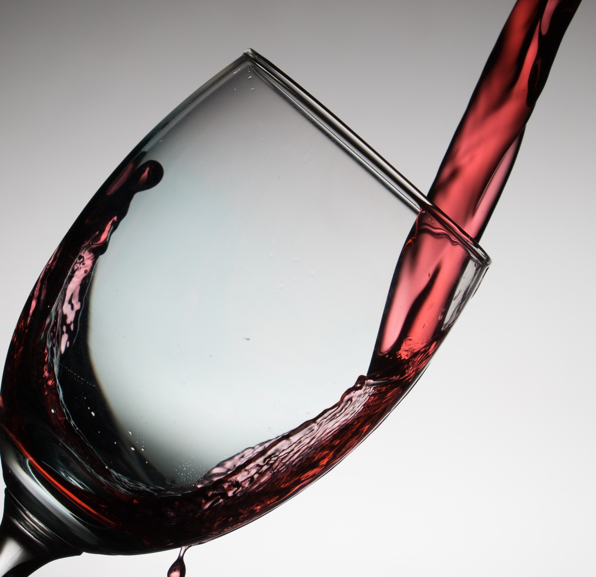
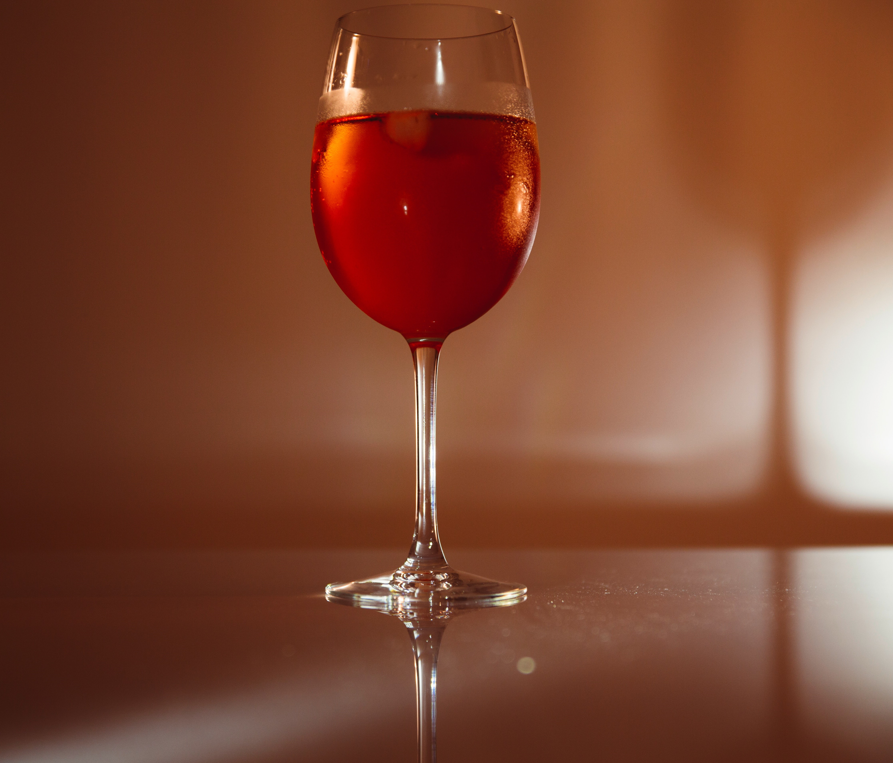
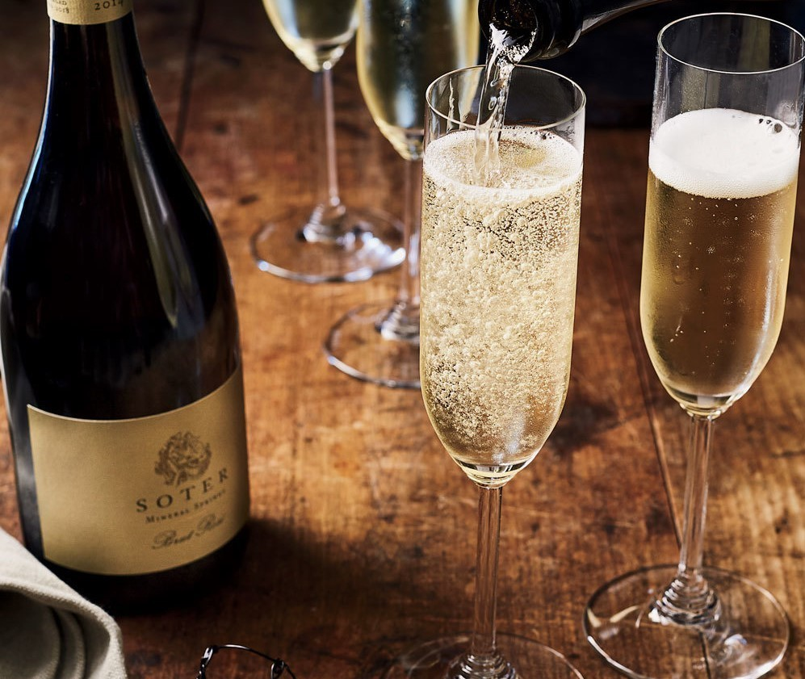
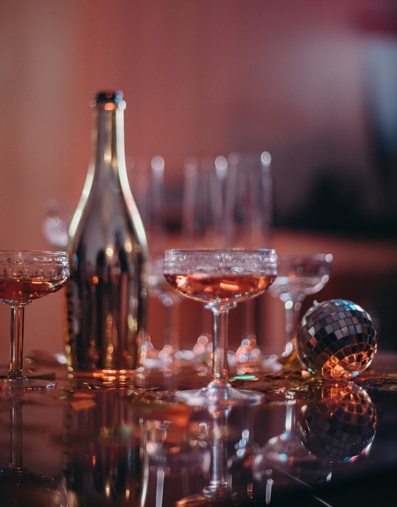
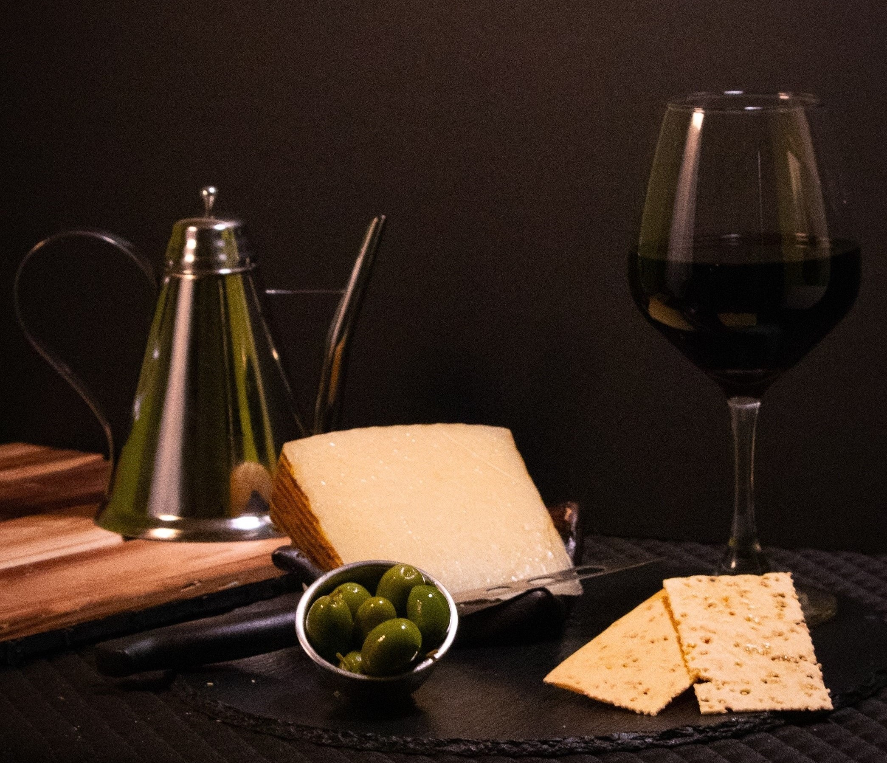

Słodki, musujący biały, 7%, Włochy, Piemont
Białe wytrawne, 11%, Włochy, Veneto
Extra brut, biały, 11,5%, Hiszpania, Katalonia
Brut, biały, 12%, Francja, szampan
Wytrawne, różowe, 13%, Włochy, Abruzja
Wytrawne, białe, 12,5%, Nowa Zelandia, Marlborough
Białe, półwytrawne, 12,5%, Austria, 2019
Wytrawne, białe, 13%, Francja, Alzacja, Riesling
Wytrawne, białe, 12%, Francja, Burgundia, Chablis
„Collio”, Pinot Grigio, 750ml
Wytrawne, czerwone, 14%, Francja, Bordeaux
Półsłodki, czerwony, 12%, Gruzja, Kachetia
Wytrawne, czerwone, 14%, Australia
Półwytrawne, czerwone, 14,5%, USA, Kalifornia
Brut, musująca biel, 10,5%, Rosja
Półsłodki, musujący biały, 10,5-13,5%, Rosja
Brut, musująca biel, 11%, Francja
Półsłodki, musujący biały, 11%, Francja
Białe wytrawne, brut, 11%, Włochy, Piemont
Słodki, biały, 15%, Włochy, Piemont
Wytrawne, białe, 12%, Hiszpania
Półsłodki, biały, 12%, Gruzja
Półwytrawne, białe, 12%, Włochy, Veneto
Półwytrawne, białe, 10,5%, Portugalia
Wytrawne, białe, 13%, Chile, Central Valley
Wytrawne, czerwone, 12%, Hiszpania
Półsłodki, czerwony, 12%, Gruzja
Wytrawne, czerwone, 13%, Chile, Central Valley
Wytrawne, czerwone, 12%, Włochy
Likier słodki czerwony, 19,5%, Portugalia, Douro
Wytrawne, czerwone, 14,5%, Włochy, Piemont, Barbaresco
Wytrawne, czerwone, 12,5%, Francja, Burgundia
Wytrawne, czerwone, 12,5%, Francja, Burgundia